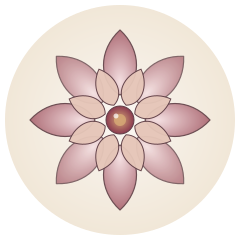
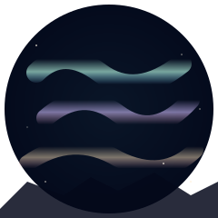
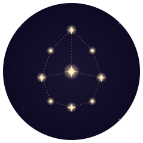
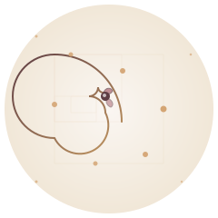
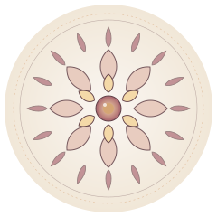
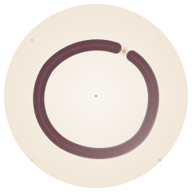
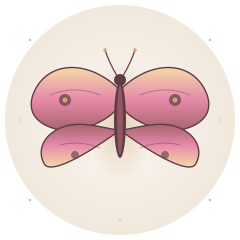

Jedes Bild zeigt den Endzustand (vergleichbar mit der späten SSW 40+) — die vollendete Form der jeweiligen Metapher. Die früheren Wochen wären jeweils reduzierte, "im Werden" befindliche Versionen.

Eine sich öffnende Blume mit symmetrischen Blütenblättern. Klassisches Symbol für Werden, Reinheit und Mutterschaft.
Spirituell · Klassisch · Zart
Vom schmalen Sichelmond bis zum vollen Mond. Ein zeitloses Symbol für weibliche Zyklen und das Wachsen.
Mystisch · Nächtlich · Ruhig

Tanzende Lichtbänder am Nachthimmel. Vermittelt Magie, Staunen und etwas Außergewöhnliches.
Magisch · Bunt · Lebendig

Sterne, die sich zu einem Bild verbinden. Das Baby als eigene Konstellation am Himmel.
Träumerisch · Ewig · Unendlich

Sich verbindende Wasserfarbe-Tropfen, weich, organisch. Wie ein Gefühl, das sich ausbreitet.
Künstlerisch · Weich · Emotional

Fibonacci-Spirale wie ein sich entrollender Farn. Mathematisch perfekte Schönheit der Natur.
Edel · Geometrisch · Naturphilosophisch
Eine Herzschlag-Welle mündet in ein leuchtendes Herz. Direkt, lebendig, emotional.
Vital · Direkt · Liebevoll

Konzentrische Kreise von Blüten und Ornamenten. Heilige Geometrie, meditativ.
Meditativ · Heilig · Komplex

Japanischer Tuschkreis mit absichtlicher Lücke. Reduktion, Achtsamkeit, Vollkommenheit im Unvollkommenen.
Minimalistisch · Zen · Stark

Geöffnete Flügel mit feinem Muster. Symbol für Verwandlung, Befreiung, Neuanfang.
Verwandelnd · Frei · Hoffnungsvoll